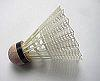
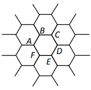

\large{ МИНИСТЕРСТВО НА ОБРАЗОВАНИЕТО И НАУКАТА
**Национално пролетно състезание по физика – Бургас, 12 март 2016 г.**
**Специална тема**
} \end{center}
Физични константи
Скорост на светлината във вакуум
Гравитационна константа
Универсална газова константа
Число на Авогадро
Земно ускорение
Задача 1. Механика на бадминтона
Перото за игра на бадминтон (вж. фиг. 1.1) е пример за тяло, при чието движение съществена роля играе силата на съпротивление на въздуха. Означените на фигурата размери на перото са и , а масата му, съсредоточена основно в сферичната глава, е . Експерименталните данни в задачата се отнасят за движение на перото във въздух при налягане и температура . Приемете, че средната моларна маса на въздуха е .
\begin{figure}[!htb]\centering \begin{minipage}{0.48\textwidth} 
\end{minipage}
\begin{minipage}{0.48\textwidth}

\end{minipage}
\end{figure}
При движение на тяло във флуид с пренебрежим вискозитет, върху тялото действа сила на съпротивление, която се дава с израза: където е плътността на флуида, – скоростта на тялото, – площта на проекцията на тялото в равнина, перпендикулярна на скоростта му (вж. фиг. 1.2). Безразмерният коефициент се нарича коефициент на челно съпротивление и зависи от формата на тялото. Целта на задачата е да определите коефициента на челно съпротивление на перото за бадминтон въз основа на реални експериментални данни.
А) Помощни съотношения. От стробоскопична снимка на движещо се тяло са установени радиус-векторите , и на три негови последователни положения през еднакви интервали от време . Ако приемете, че движението на тялото е равноускорително, получете изрази за ускорението на тялото и за скоростите му , и в съответните три момента, изразени само чрез радиус-векторите и интервала време. [2.5 т]
Б) В случай, че движението на тялото не е равноускорително, получените в точка А формули дават само приблизителни стойности за скоростта и ускорението в трите момента. За кой от трите момента, според вас, получените формули дават най-точна оценка на скоростта и на ускорението? Не е нужно да се аргументирате. [0.5 т]
В) Графиката на фиг. 1.3 изобразява последователните положения на главата на летящо перо за бадминтон, получени от стробоскопична снимка с интервал между кадрите . Оста X е хоризонтална, а Y – вертикална. Можете да приемете, че: 1) през целия полет оста на перото е успоредна на вектора на скоростта на главата; 2) промяната на ускорението за времето между два кадъра е пренебрежимо малка.
\begin{figure}[H] \includegraphics[width=0.85\textwidth, center]{2016pr_3.png} \caption{Последователни положения на главата на перо за бадминтон, получени от стробоскопична снимка с интервал между кадрите .} \end{figure}
В празните полета на таблицата от работния лист нанесете:
- координатите и на перото в моментите на дадените кадри (в момента перото се намира в центъра на координатната система);
- пресметнатите компоненти и , и съответно на скоростта и ускорението на перото. Запишете формулите, които използвате, за да получите оценка на скоростта и ускорението в -тия момент от време (можете да не разглеждате началния и крайния момент). [3 т]
Г) Въз основа на дадените и на пресметнатите данни, предложете графичен метод, чрез който да определите коефициента на челно съпротивление на перото. Направете нужните изчисления и оценете грешката на получения резултат. За построяване на графики можете да използвате разграфената координатна система в работния ви лист. [4 т]
Внимание! Предайте работния лист заедно с останалите листа от решението.
Задача 2. Гравитационна вълна
Гравитационната вълна представлява смущение в геометрията на пространството, което се разпространява с крайна скорост . От практическа гледна точка гравитационната вълна се проявява като деформация на телата, през които преминава. Гравитационните вълни се излъчват от масивни обекти, които се движат с ускорение, например: въртящо се несиметрично тяло, двойка звезди, обикалящи около общия им център на масата, неизотропен взрив на свръхнова, сблъсък между космически обекти и др.
А) Гравитационната вълна предизвиква деформация на телата в равнина, перпендикулярна на посоката на разпространение на вълната. Деформацията се изразява в еднородно разтягане (свиване) на тялото пъти в дадено направление и едновременно свиване (разтягане) пъти в перпендикулярното направление , както е показано на фиг. 2.1. В случай на слаби гравитационни вълни, породени от далечни космически обекти, коефициентът на разтягане се мени по хармоничен закон: където е безразмерната амплитуда на вълната. Тя има смисъл на максимална относителна деформация, предизвикана от вълната.
\begin{figure}[!htb]\centering \begin{minipage}{0.48\textwidth} \includegraphics[width=.5\linewidth, center]{2016pr_4.png}
\end{minipage}
\begin{minipage}{0.48\textwidth}

\end{minipage}
\end{figure}
Нека означим с интензитета на вълната, т.е. количеството енергия, което вълната пренася за единица време през единица площ, ориентирана перпендикулярно на посоката на разпространение. Както при механичните вълни, интензитетът на гравитационната вълна е пропорционален на квадрата на нейната амплитуда: където коефициентът на пропорционалност зависи от кръговата честота на вълната и фундаменталните константи и . Определете вида на функцията с точност до безразмерен множител. [1.5 т]
Б) Гравитационна вълна е породена от двойка звезди с маси и , обикалящи около общия си център на масата на разстояние r една от друга, както е показано на фиг. 2.2. Съгласно с Общата теория на относителността, амплитудата на вълната на разстояние R от звездите () се дава с израза: където е кинетичната енергия на звездите, а е коефициент на пропорционалност, зависещ само от фундаменталните константи и . Получете израз за с точност до безразмерен множител. [1.5 т]
В) За двойната система от фиг. 2.2 получете, с точност до безразмерен множител, израз за пълната мощност , излъчвана под формата на гравитационни вълни, като функция на масите на звездите, разстоянието между тях и фундаменталните константи и . [1 т]
Г) Загубата на енергия под форма на гравитационни вълни води до бавно намаляване на разстоянието между двойката звезди. Получете израз за скоростта , с която се променя разстоянието между звездите, ако приемете, че относителното изменение на разстоянието за една обиколка е много малко. Релативистките ефекти не се отчитат. Всички безразмерни коефициенти от предишните подточки, водят до множител 64/5, който можете да използвате наготово в окончателния израз. [3 т]
Д) За колко време разстоянието между звездите в системата ще се промени от определена начална стойност до крайна стойност (). [1.5 т]
Е) В проведения наскоро експеримент за детектиране на гравитационна вълна е регистрирана вълна от двойка черни дупки, въртящи се около общия си център на масата. Честотата на регистрирания сигнал се изменя от 45 Hz до 360 Hz за време , след което се предполага, че двете черни дупки са се сблъскали и сляли.
Ако приемете, че масите на двете черни дупки са еднакви, определете числено тяхната маса , началното разстояние между тях и разстоянието rc, при което е настъпил сблъсъкът. Не е нужно да получавате аналитични изрази за търсените величини. Релативистките ефекти не се отчитат. [1.5 т]
Задача 3. Хексагонална решетка
Много често в природата и в техниката се срещат хексагонални структури, т.е. структури съставени от правилни шестоъгълни елементи, запълващи плътно двумерна равнина (виж например фиг. 3.1). Тук, в три независими подусловия, ще изследвате някои физични свойства на различни такива структури.
\begin{figure}[!htb]\centering \begin{minipage}{0.3\textwidth} \includegraphics[width=.9\linewidth, center]{2016pr_6.png}
\end{minipage}
\begin{minipage}{0.3\textwidth}
\includegraphics[width=.9\linewidth, center]{2016pr_7.png}
\end{minipage}
\begin{minipage}{0.35\textwidth}
\includegraphics[width=.9\linewidth, center]{2016pr_8.png}
\end{minipage}
\end{figure}
А) Повърхнинна плътност на графена [2 т]
Графенът (фиг. 3.2) е двумерна форма на въглерода. Състои се от въглеродни атоми, заемащи върховете на правилни шестоъгълници, които запълват плътно равнината. Разстоянието между два съседни въглеродни атома е . Колко е повърхнинната плътност на графена, т.е. колко е масата на единица площ от слой графен. Моларната маса на въглерода е .
Б) Хексагонална мрежа от резистори [3 т]
За безкрайната хексагонална мрежа от еднакви резистори със съпротивление всеки (фиг. 3.3), определете еквивалентното съпротивление между точките и .
В) Дифузия в хексагонален кристал [5 т]
\begin{wrapfigure}{r}{0.2\textwidth} 
\end{wrapfigure}
В някои кристали пренасянето на електричен ток се дължи на т.нар. „скокова” проводимост. В отсъствие на електрично поле, токовите носители „блуждаят” по кристала, като извършват случайни скокове от атом на атом. В хексагоналния кристал, показан на фиг. 3.4, в даден момент електрон се намира в т. . Електронът може да прескочи с еднаква вероятност 1/3 на всеки от трите съседни атома, после със същата вероятност на някой от следващата тройка съседни атоми и т.н.
Пресметнете вероятностите и след три случайни скока електронът да се окаже съответно в точките от до .